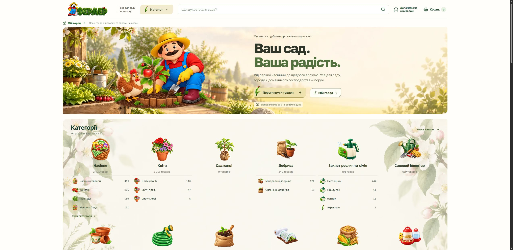
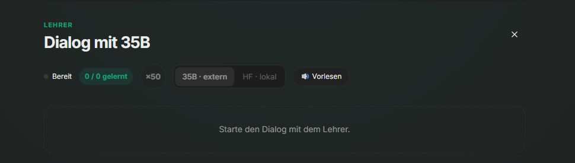
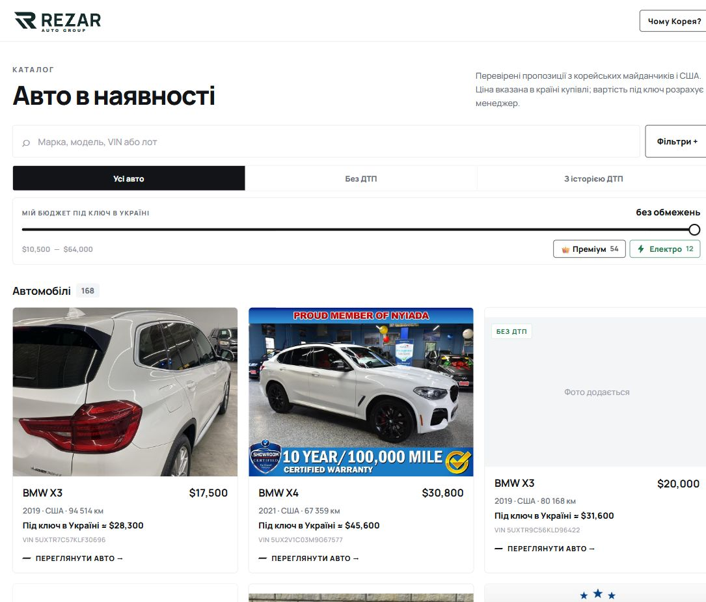

Feb. 2020–heute
Senior PHP Developer · TCB Hard + Software
PHP-Anwendungen für eine digitale Medienplattform entwickelt und gepflegt, mit Fokus auf Produktentwicklung, Zuverlässigkeit und langfristige Wartbarkeit.

Lebenslauf
Kyjiw, UkraineRemote über ukrainischen FOP
Middle / Senior / Tech LeadVollzeit oder Vertrag
SprachenEnglisch · Deutsch · Ukrainisch · Russisch
PHP · Laravel · Lumen · Symfony · Vue.js · TypeScript · KI-gestützte Produktentwicklung
Full-Stack-Entwickler mit mehr als zehn Jahren kommerzieller PHP-Erfahrung im Laravel-, Lumen- und Symfony-Umfeld, einschließlich Arbeit mit einem Symfony-Microframework. Ich entwickle mit Vue.js, JavaScript und TypeScript und modernisiere Webanwendungen, APIs und Datenbanken. KI-Werkzeuge nutze ich für Recherche, Implementierung und Code-Reviews. Ich arbeite als Entwickler und übernehme bei Bedarf technische Verantwortung für Team und Architektur.
Erfahren im Aufbau von Systemen, die unter realen Bedingungen zuverlässig laufen müssen: hohe Last, verteilte Geräte, instabile Netzwerke, lange Produktlebenszyklen und sich verändernde Geschäftsanforderungen.

Stärken:
Ich arbeite an Anwendungscode, Infrastruktur und vernetzten Geräten und eigne mir die Werkzeuge an, die ein Problem erfordert.
Verteilte Videoplattform: Mitarbeit an einer verteilten Medienplattform mit Anwendungen und vernetzten Geräten. Im Mittelpunkt standen zuverlässige Wiedergabe und Fernbetrieb.

Aktuell bei TCB Hard + Software tätig und offen für eine neue Position oder Projektarbeit.
Die Positionen sind nach dokumentiertem Beginn geordnet.
PHP-Anwendungen für eine digitale Medienplattform entwickelt und gepflegt, mit Fokus auf Produktentwicklung, Zuverlässigkeit und langfristige Wartbarkeit.
Laravel-Backend und Frontend mit Vue und TypeScript.
PHP-Entwicklung im MediaWiki- und BlueSpice-Umfeld.
Dashboards und Marktplatz-APIs mit Laravel.
Produktentwicklung mit Laravel, Vue.js und MySQL.
Suchmaschinenoptimierung und Umsetzung von Webprojekten.
BREITE MIT KONKRETEN BEISPIELEN
Mein kommerzieller Schwerpunkt ist die PHP- und Full-Stack-Entwicklung. Darüber hinaus verbinde ich Webprodukte mit Infrastruktur, vernetzten Geräten, lokalen KI-Werkzeugen und spezialisierten Anwendungen. Die folgenden Beispiele zeigen berufliche Arbeit, eigenständige Produkte und laufende Prototypen.
Kommerzieller Schwerpunkt
Mehr als zehn Jahre kommerzielle PHP-Erfahrung mit Laravel, Lumen, Symfony und im MediaWiki-/BlueSpice-Umfeld. Dazu gehören APIs, Datenmodelle, mandantenfähige Plattformen, Vue-Oberflächen und die Modernisierung gewachsener Systeme.
Die verbindende Stärke: bestehende Systeme verstehen, ihre Rahmenbedingungen erfassen und sie über Frontend, Backend und Betrieb hinweg weiterentwickeln.
Berufliche Plattformentwicklung
Digitale Medienprodukte entwickelt und gepflegt, die Webanwendungen mit vernetzten Geräten verbinden.
Schwerpunkte waren zuverlässiger Betrieb, Bedienbarkeit und langfristige Betreuung.
Infrastruktur & Betrieb

Erfahrung mit produktiver Infrastruktur, Linux-Betrieb, Monitoring, Netzwerken und Fernsupport.
Praktische Werkzeuge entwickelt, damit Teams Dienste und Geräte langfristig betreiben können.
Entwicklungswerkzeuge & Integration

Lokale KI- und Entwicklerwerkzeuge mit C++ und Python entwickelt, darunter Modellintegration und Automatisierung von Arbeitsabläufen.
KI unterstützt Implementierung, Tests und Reviews. Tabula / Punchenko NNL untersucht experimentelle Sprach- und Modell-Workflows; Forschungsergebnisse werden weiter geprüft.
Produktprojekte
Fermershop verbindet einen Webshop mit praktischen Verwaltungswerkzeugen. Ich arbeitete an Katalog, Produktdaten und zuverlässiger Auslieferung.
Weitere Commerce-Arbeit umfasst den 6-Moments-/Shop-Jewel-Shop und die Paketierung einer OpenCart-Erweiterung.
Praxiswerkzeuge
Desktop-Anwendungen mit Rust und Tauri umfassen ein Excel-Werkzeug und eine macOS-Oberfläche zur Geräteverwaltung.
TidyDrive ist ein aktiver geräteübergreifender Prototyp; Frequent Tab ist eine lokale Chrome-Erweiterung. Die Hardwarevalidierung des neuen TidyDrive-Ablaufs steht noch aus.
Produktintegration

Rezar verbindet einen Python-Telegram-Bot mit mobilem Katalog, Suche und Filtern, Fahrzeugdetails, Anfragebearbeitung und einer Verwaltungsoberfläche für den Katalog.
Das weitere Projektportfolio umfasst Aufgaben-Marktplätze, Familienkoordination, Video-Werkzeuge und Tattoo-Konzept-Workflows. Gemeinsam ist diesen Projekten die Umsetzung einer konkreten Nutzeraufgabe in einen durchgängigen Produktablauf.
Geräteintegration

Praktische Arbeit mit ESP32, ESPHome, Home Assistant, UART, RS-485 und CAN: Geräteintegration, Firmware-Konfiguration, lokale Websteuerung, OTA-Abläufe und Elektronik-Fehlersuche.
Projekte verbinden Hardware mit Softwareoberflächen, etwa die Integration von Klimaanlagen und Oberflächen zur Klimasteuerung. Löten, Anschlussarbeiten und Prototypen für 3D-gedruckte Gehäuse ergänzen die Softwareentwicklung.
Eigenständige Projekte

Neon Crown untersucht Gameplay- und Weltsysteme mit Unreal Engine und C++, darunter Interaktion, HUDs, Szenenintegration und Build-/Release-Werkzeuge. MythicBoost ist ein Lua-basiertes World-of-Warcraft-Add-on mit konfigurierbarem HUD und Spielanalyse.
Die elektronische Musikproduktion als Techno Punch ergänzt Komposition, Klang, Artwork und Videopräsentation. Diese Projekte beschäftigen sich mit dem gesamten Erlebnis aus Bild, Ton und Interaktion.
KI-NATIVE ENGINEERING
Ich entwickle KI-native Engineering-Workflows, in denen KI-Agenten den gesamten Delivery-Zyklus unterstützen: Problemklärung, Planung, Implementierung, Tests, Code-Reviews, Deployment, Monitoring und Support — mit menschlicher Verantwortung, Validierung und Produktionszuverlässigkeit.
Ich halte die Verbindung zwischen Kundenwunsch, Aufgabenbeschreibung und tatsächlichem Ergebnis aufrecht. Mein Beitrag umfasst Aufgabenklärung, Koordination und eigene Prüfung der Umsetzung.
AUSGEWÄHLTE ERGEBNISSE
Bild- und Videoprodukte mit zuverlässigem Betrieb vernetzter Geräte.
Multi-Tenant-Architektur, modulare Backends und moderne Vue-Oberflächen.
C++-Werkzeuge, AI-gestützte Workflows und reproduzierbare Prüfungen.
WEITERE FACETTEN
Lokale KI-Experimente, Entwicklerwerkzeuge und automatisierte technische Bewertungen.
Erfahrung mit Betrieb, Monitoring, Netzwerken und Embedded Linux.
OPEN SOURCE & SYSTEME
Beiträge im Wikipedia-Ökosystem und am Linux-Kernel. Verständnis für Laufzeitumgebungen, Performance und systemnahe Grenzen.
HOW I WORK / ARBEITSWEISE
Vier Perspektiven auf meine Arbeit. Die Details lassen sich bei Interesse öffnen.
ARCHITEKTUR
Systeme so aufbauen, dass Teams sie verstehen und weiterentwickeln können.
VERANTWORTUNG
Datenmodelle, APIs, Performance, Sicherheit und technische Entscheidungen verbinden.
DOMÄNEN
Plattformen für SaaS, Content, Gerätesteuerung und Edge-Infrastruktur.
ARBEITSSTIL
Prototypen prüfen, sauber dokumentieren und verlässlich ausliefern.
PROJEKTE
Screenshots aus Frontend, Backend, Spielentwicklung und Elektronik.
Oberfläche zur Verwaltung von Reverse-Proxy-Routen und der zugehörigen Container, mit Prüfung und Rücksetzung vor dem Neuladen.
Webshop mit praktischen Verwaltungswerkzeugen für Katalog, Lagerbestand und Verkaufsabläufe.
Freiberufliche Aufträge. Transparente Auszahlungen.
Oberfläche eines Marktplatzes für freiberufliche Aufträge, Bewerbungen, Kontoaktivitäten und Auszahlungen in Kryptowährung. Die Demoansicht zeigt kein echtes Benutzerkonto.
Spielbares Waldlager mit Figuren, HUD, Interaktion und Weltsystemen.

Lokale Oberfläche für Lichtpläne, Lüftung, Temperatur und Luftfeuchtigkeit.

Praktische Erfahrung mit Prototypenbau, Löten und Fehlersuche mit ESP32, RS-485 und CAN. Zuletzt habe ich eine Bosch-Klimaanlage mit einem ESP32-C3 Super Mini, einem direkten Anschluss und einer verbesserten Antenne ausgestattet, den Controller programmiert und in mein Smart Home eingebunden.

TECHNO PUNCH
Meine elektronische Musik: Komposition, Produktion und visuelle Gestaltung.
LASSEN SIE UNS SPRECHEN
Eine Rolle, ein Projekt oder eine konkrete technische Herausforderung: Schreiben Sie mir und wir finden einen guten Startpunkt.
E-Mail schreibenProjektumfang und Konditionen besprechen wir direkt.